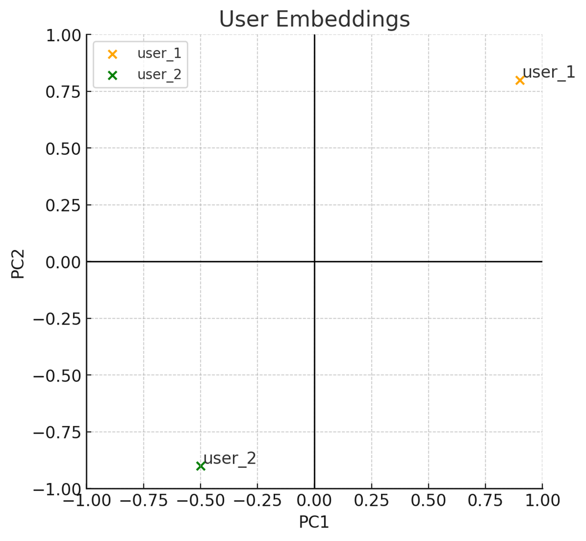
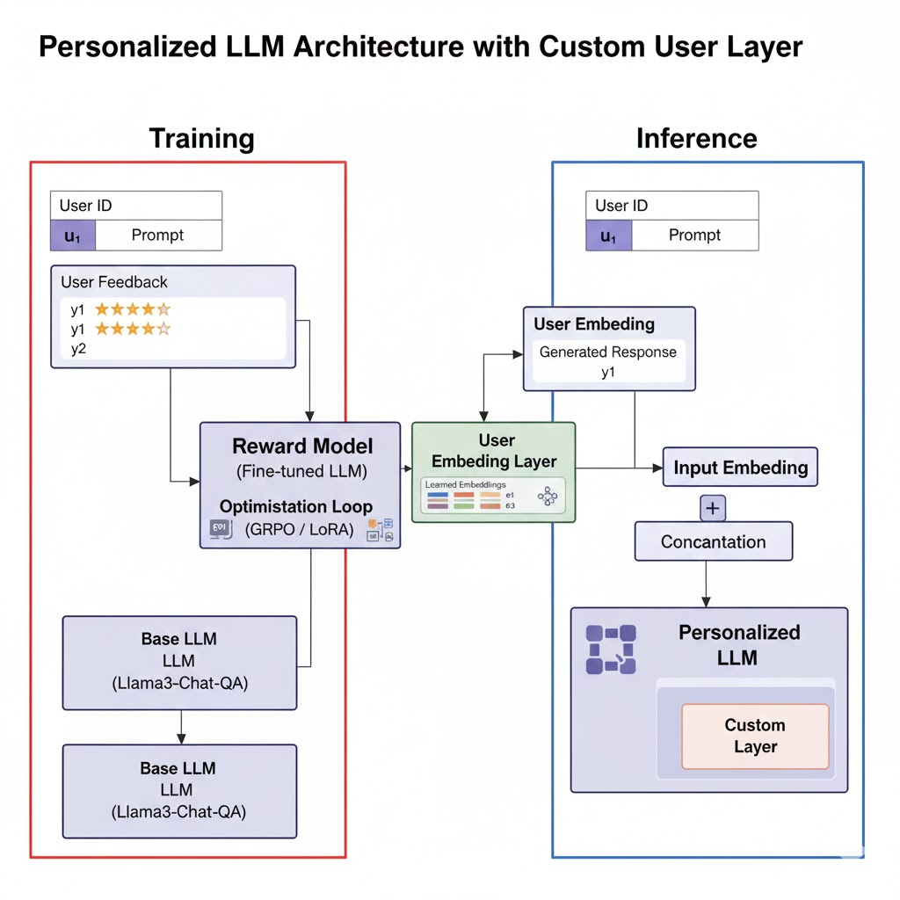
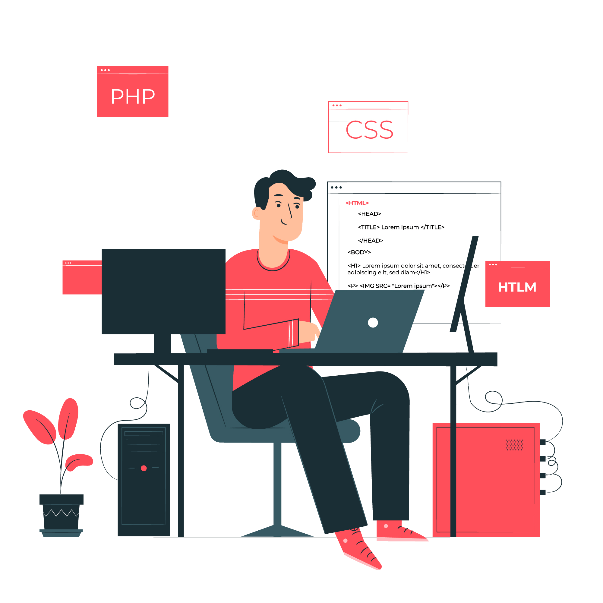

Moritz
Exploring Innovation in Data Analytics & AI Systems
21 | Artificial Intelligence | Data Science | Software Engineering
About
My IntroductionHooked on AI
I'm deep in the world of AI, exploring its transformative potential across cutting-edge technologies. Beyond AI, I dive into massive software engineering projects that scale complex systems and push architectural boundaries.
Passion for Innovation
I'm passionate about Machine Learning-transforming abstract code into models that recognize images or understand context feels like magic.
Breaking Barriers
I thrive on solving complex problems and turning ideas into tech that makes a difference—those breakthrough moments are what drive me.
Skills
My technical & miscellaneous skillsAI & Data Science
3+ Years XPComputer Vision
92%Natural Language Processing
85%Generative AI
90%Reinforcement Learning
88%Deep Reinforcement Learning
85%RLHF
82%Probability & Statistics
85%Data Analytics & Visualization
80%MLOps
90%Distributed DNN Training
85%Multi Agent Models
85%Neural Networks & HPC
88%Programming & Frameworks
3+ Years XPPython
95%PyTorch
92%TensorFlow
88%NumPy & Pandas
93%R
80%C & C++
90%C#
90%SQL
95%MLflow / Weights & Biases
87%Computing
2+ Years XPDocker
90%Microsoft Azure
80%Amazon Web Services
75%Virtualization
75%Frontend
2+ Years XPHTML
90%CSS
85%JavaScript
75%Angular
85%React Native
85%Backend
2+ Years XPPython - Flask, Fast API
95%Node JS
80%Misc
2+ Years XPGit
90%Linux
90%DevOps
75%Software Development
85%Leadership
95%Communication
90%Time Management
98%Experience
My journey in the academic & professional front
Machine Learning Engineer
Eviden Austria (ATOS)Data Science Engineer
Smart DigitalFreelancer
Paramedic
Research
Academic Research & Thesis WorkFoundational Model for Neurosurgical Video Intelligence
University College London • 2025-2026Foundational Model for Neurosurgical Video Intelligence
Status: In ProgressThis project's goal is to build the first foundational model for neurosurgery. I am training a large model on a unique dataset of over 100 hours of mostly unlabelled surgical video. The model will learn rich, general-purpose visual representations of the complex neurosurgical environment directly from the footage.
Instrument Understanding
This part of the evaluation will test the model's ability to comprehend the tools used in surgery.
- Detection: The model must identify all instruments present in the surgical field.
- Segmentation: It will precisely outline the complete boundary of each tool.
- Pose Estimation: The model will determine the three-dimensional orientation of each instrument.
- Tracking: It will follow the exact path and movement of surgical tools through the video sequence.
Mapping the Operative Environment
This evaluation will assess the model's spatial and anatomical awareness of the surgical site.
- Depth Estimation: The model will reconstruct a 3D view of the operative area from the 2D video feed.
- Tissue Segmentation: It will distinguish between different types of biological tissue.
- Tissue Classification: The model will categorise tissue based on its visual properties.
- Anatomical Recognition: It will identify critical anatomical structures within the brain and surrounding areas.
The final model will provide a powerful base for future neurosurgical AI systems, from robotic assistance to advanced training simulations. I plan to publish the findings in a leading AI journal.
Current Focus: My work now involves preparing the dataset and conducting initial training experiments.
Automatic LLM Personalisation with Human Feedback
UAS Vienna • 2024-2025Automatic LLM Personalisation with Human Feedback
Key Results

PCA plot showing the learned embeddings for the 'lawyer' (user_1) and 'social media analyst' (user_2). Their separation demonstrates the model successfully captured their distinct preferences.
I enhanced a commercial RAG system to address data privacy risks and enable automatic user personalisation. I developed a local LLM with a custom user-embedding layer that learns individual preferences from star ratings. The final system adapted its response style to different user personas, making a lawyer persona 90% more likely to receive a detailed, formal response.
The Problem
The existing system sent user data to third-party APIs, which was unacceptable for clients with sensitive information. The system also had no memory for user preferences between sessions, causing user frustration.
Technical Solution
System Architecture

Architecture diagram showing the RAG system, user feedback loop, local LLM, and custom user-embedding layer integration.
Architecture
My solution uses a Representation Learning Approach. I subclassed a LlamaForCausalLLM to introduce a custom user-embedding layer. This layer concatenates a learned user-specific vector with the standard word embeddings. This method allows a single model to serve all users, which avoids the high cost of training a model for each user.
Training and Optimisation
The model was trained using Reinforcement Learning from Human Feedback (RLHF). I used Group Relative Policy Optimization (GRPO) because its low memory footprint was essential for the single Tesla T4 16GB GPU, as it does not require a reference model like PPO. To make training feasible, I used LoRA, 8-bit precision, and Key-Value (KV) caching, which reduced response times by 1.36 seconds per query.
Results
Example: Persona-Based Responses
Prompt: What is a projectile?
Key Learnings
- Hyperparameter Tuning: RLHF training is very sensitive. A high learning rate caused model collapse, where it only outputted the letter "e".
- Hardware Constraints: Optimisation techniques like GRPO, LoRA, and KV caching were not optional. They were essential to successfully train and run the model on a single 16GB GPU.
- Dataset Selection: The choice of dataset is important. The short answers in the SQuAD dataset were not suitable for training a model on style and verbosity. The QuAC dataset was more effective.
Portfolio
My works, projects & contributions
VoiceGuard - Intelligent Trigger Word Detection
A Neural Network that detects the trigger word "activate". The system uses a combination of background audio, random word snippets, and "activate" snippets for training. When it hears "activate", it produces a chiming sound. The training data includes audio from various environments for robust detection.
View